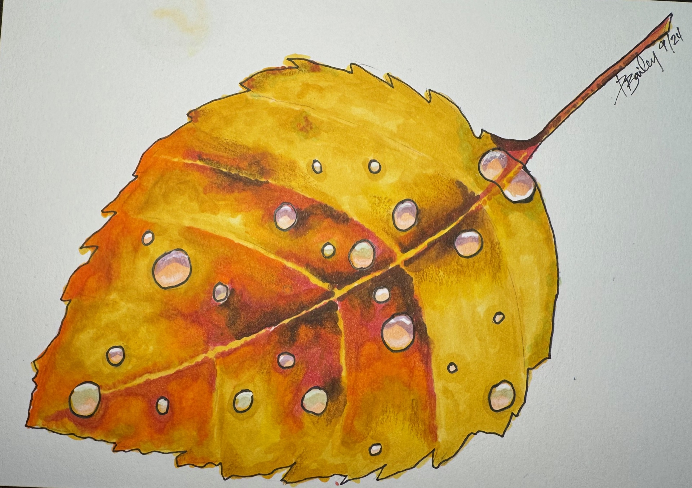
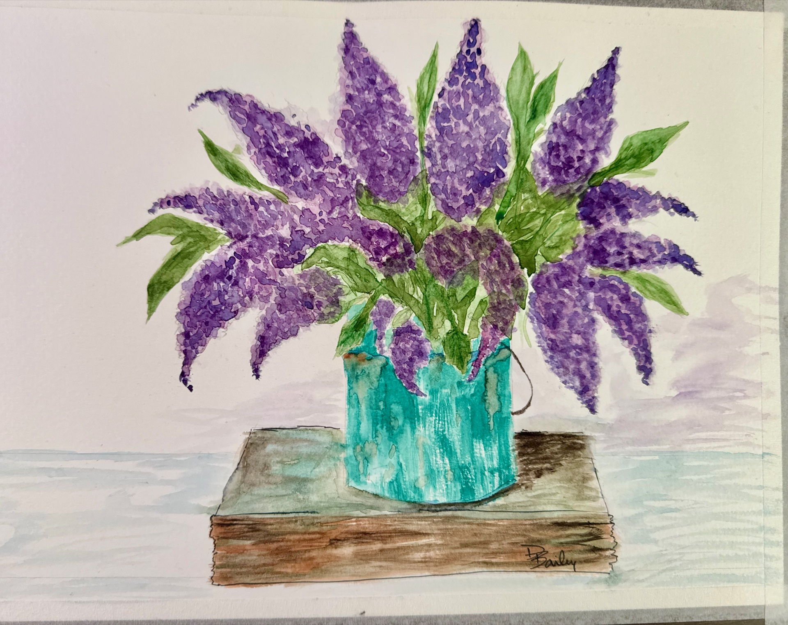
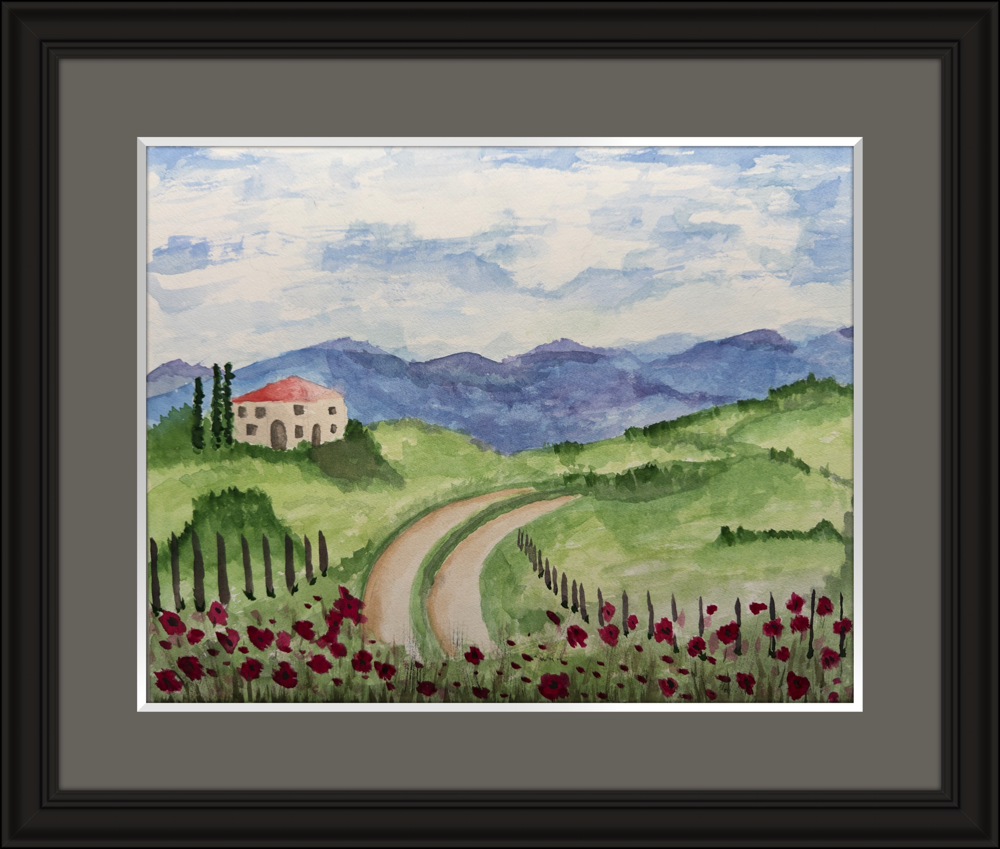
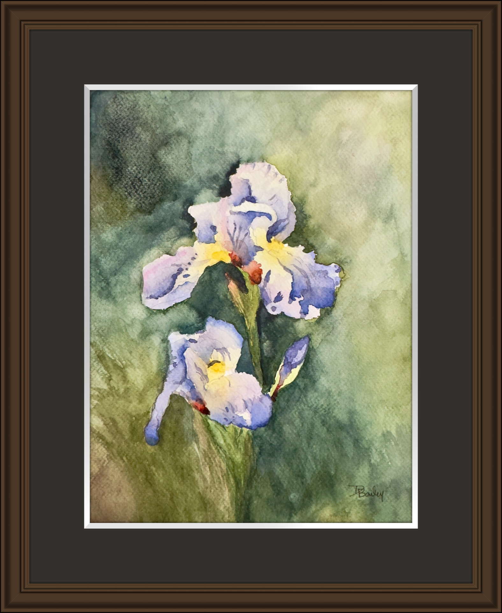
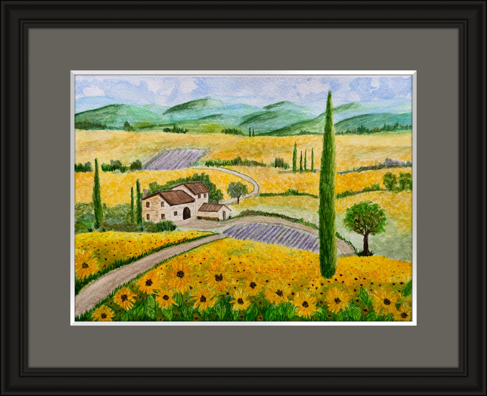
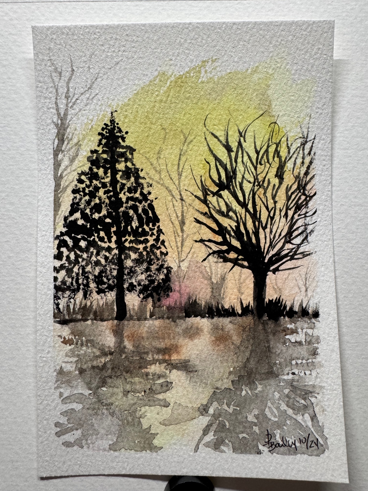
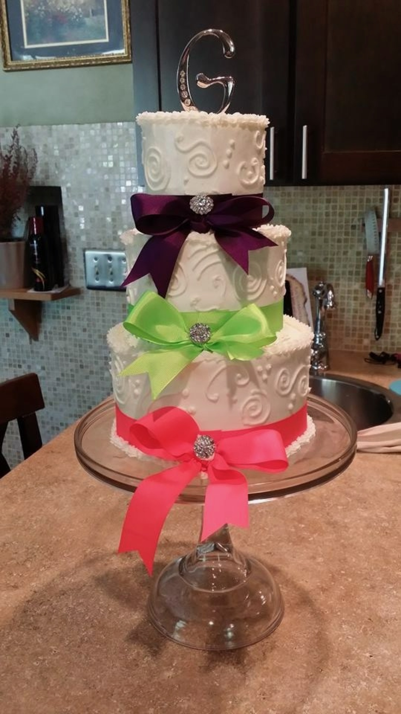

Creative Portfolio · 05
Illustration & Visual Design
Creative Work
The same eye for composition, proportion, and detail that drives the UX work, expressed in watercolor and sugar.

- Mediums
- Watercolor, cake and sugar art
- Watercolor
- 7+ years
- Cake Design
- 35+ years, weddings to competition
- Recognition
- Silver Medalist, Pastry Arts
Watercolors
Watercolor rewards the same discipline that UX work requires: knowing when to stop. Every mark is committed. There are no undo steps. The medium demands decisions made with confidence and lived with completely, which turns out to be good practice for design.












Cake & Pastry Design
35+ years of professional pastry work, from competitive showpieces to wedding cakes designed around a couple's story. Every piece began the way any design project does: a client conversation, a set of constraints, and a vision that had to be translated from concept into something real and beautiful, under pressure.
From sketch to cake
Every cake started as a drawing. The sketch captured the client's vision and the structural decisions; the finished cake had to deliver on both.


Selected cakes




Same Discipline. Different Medium.
The craft changes. The process doesn't. Understand what's being asked for. Translate it. Execute it without excuses.
Whether the canvas is watercolor paper, a tiered cake, or a Figma file, the work starts the same way: a conversation, a set of constraints, and a vision that belongs to someone else and has to be made real with precision. What 35 years of creative practice taught me is that the discipline of craft doesn't transfer. It already is the discipline. UX design wasn't a career change. It was a vocabulary change.